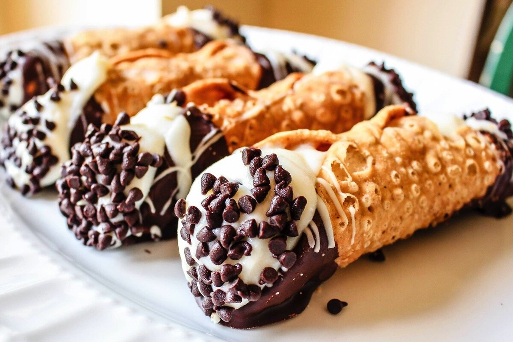

Вкусный блог!
Итальянская кухня NEW
Итальянская кухня известна своими простыми, но глубокими вкусами, богатыми историей и культурой. Ее характерные ингредиенты, такие как оливковое масло, паста и томаты, дают ей уникальный оттенок.
Мы рады представить вам три наших любимых рецепта итальянской кухни!
| Изображение: | Название блюда: | Рецепт: |
 |
Спагетти Аль Помодоро | Ингредиенты:
репчатый лук — 1 головка;
чеснок — 4 зубчика;
оливковое масло — 60 мл;
молотый красный перец — щепотка;
консервированные помидоры кусочками — 800 г;
соль по вкусу;
базилик — 3 стебля;
спагетти — 350 г;
сливочное масло — 2 столовые ложки;
сыр пармезан — 60 г;
Приготовление: Нагреть оливковое масло в сковороде, добавить рубленый в блендере лук и готовить, помешивая, 12 минут. Добавить измельчённый чеснок и жарить ещё 2–4 минуты. Всыпать перец — ещё 1 минута. Сделать пюре из томатов, вылить в сковородку, посолить, готовить в течение 20 минут. Снять с огня, положить в соус базилик и отставить. Сварить спагетти, слить воду, оставив 0,5 чашки. Вынуть базилик, возвратить сковороду на огонь, влить воду, оставшуюся от спагетти и дать закипеть. Добавить пасту, готовить, хорошо перемешивая, 2 минуты. Посыпать сыром и кусочками масла, дать маслу растаять и подать к столу. Приятного аппетита! |
|  | Итальянские канолли | Ингредиенты:
1.Ингредиенты для теста:
пшеничная мука — 250 г;
сахар — 2 ст. л.;
холодное сливочное масло — 30 г;
яйцо — 1 шт. (мелко взбитое);
белое сухое вино или уксус — 2 ст. л.;
соль — щепотка;
2.Ингредиенты для начинки:
свежая рикотта — 500 г;
сахарная пудра — 150 г;
ванильный экстракт — 1 ч. л.;
кусочки тёмного шоколада или шоколадные
капли — 100 г;
цукаты (по желанию) — 50 г;
Приготовление: Смешайте муку с сахаром и солью. Добавьте холодное нарезанное сливочное масло и растерите его с мукой до образования крошки. Добавьте яйцо и вино или уксус, замесите гладкое тесто. Заверните его в плёнку и оставьте в холодильнике на 30 минут. Рикотту тщательно перетрите через сито, чтобы избавиться от комочков. Добавьте сахарную пудру, ваниль и хорошо перемешайте. Затем добавьте шоколадные капли и цукаты по желанию. Оставьте в холодильнике до использования. Разделите тесто на маленькие кусочки, раскатайте их в тонкие круги. Оберните каждый круг вокруг специальной металлической формы для канноли. Обжаривайте трубочки в большом количестве растительного масла до золотистой корочки. Осторожно снимите обжаренное тесто с формы и оставьте остывать на бумажном полотенце. Наполните остывшие трубочки кремом с помощью кондитерского мешка. Посыпьте канноли измельчёнными фисташками, сахарной пудрой и цукатами. Приятного аппетита! |
 |
Десерт «а-ля тирамису» с малиной | Ингредиенты:
печенье бисквитное (савоярди) — 200 г;
сыр маскарпоне — 200 г;
яйца — 2 шт. (или взбитые сливки — примерно в том же объёме);
малина свежая — 2–3 ст. л.;
сахар — 70 г;
кофе (напиток) — 50 мл;
шоколад или какао — 1 ч. л.;
мята свежая (по желанию) — для украшения.
Приготовление: Отделить яичные белки от желтков, первые довести до пышного состояния с помощью кухонного миксера. Смешать желтки с сахаром, пока масса не увеличится в размере и не станет светлой. Смешать маскарпоне и желтковую смесь. Добавить белую массу, аккуратными движениями (чтобы не повредить текстуру крема) сделать заготовку однородной. Опустить печенье в кофе (на 1 секунду) и выложить в креманку. Добавить ягоды малины. Покрыть массу кремом (по всему периметру). Повторить процесс несколько раз, последний слой покрыть кремом. Украсить десерт по своему усмотрению. Охлаждённый десерт подать с любым напитком или употреблять как самостоятельное блюдо. Приятного аппетита! |